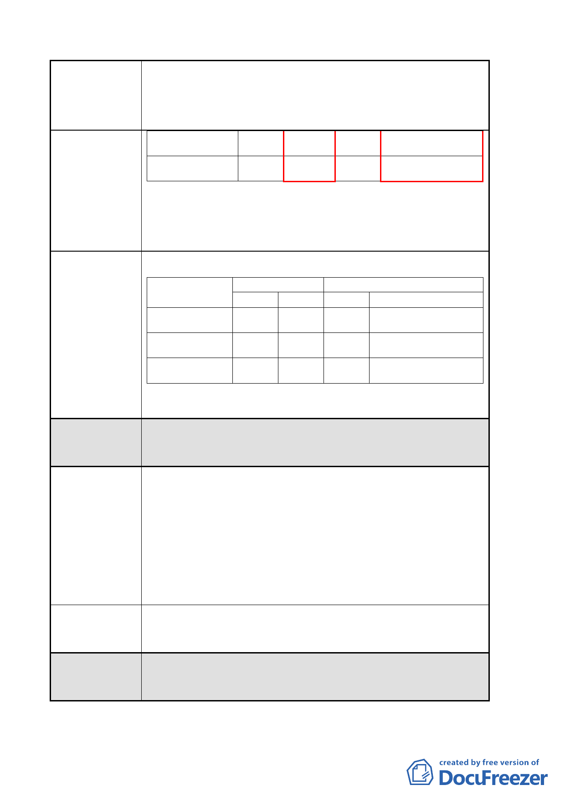

案名
變更臺北市中山區長春段二小段 125-1 地號等 47 筆土地第
三種住宅區為第三種住宅區（特）、第三之二種住宅區為第
三之二種住宅區（特）及修訂第三種商業區（特）土地使
用管制細部計畫案
第3-2住種宅區(特)
45
400
45 400+臺北好好看之獎勵
容積
第3種商業區(特) 45 400 45 400+臺北好好看之獎勵
容積
說明：本開發案係申請都市更新暨台北好好看容積獎勵，變
更後容積應為原法定容積加上臺北好好看及都市更
新容積獎勵，若未載明本案含都市更新獎勵恐有混淆
之虞。
建議將『變更前後土地使用強度整理表』修正如下表：
建議辦法四
變更前
土地使用分區 建蔽率(%) 容積率(%) 建蔽率(%)
變更後
容積率(%)
第3種住宅區(特)
45
225
45 225+都市更新暨臺北好好
看之獎勵容積
第3-2住種宅區(特) 45 400 45 400+都市更新暨臺北好好
看之獎勵容積
第3種商業區(特)
45
400
45 400+都市更新暨臺北好好
看之獎勵容積
委員會決議 本案並未涉及法定建蔽率及容積率上限之變更。
陳情理由五
建議辦法五
喬木尺寸規範：本案規定選用喬木尺寸時均以尺寸較大之苗
木為原則（胸高米徑寬需為 15 公分以上）。
說明：考量基地整體開發及提供豐富的都市景觀開放空間，
景觀規劃上應提供多元的喬、灌木尺寸，且較大之苗
木覆土深度亦較深，於地下開挖範圍內恐限制喬木種
植之景觀配置，建議未來喬木尺寸規範應依臺北市都
市設計及土地使用開發許可審議委員會審議通過為
準。
喬木尺寸規範建議依臺北市都市設計及土地使用開發許可
審議委員會審議通過為準。
有關喬木尺寸規範，依市府代表表示同意依公民或團體陳
委員會決議 情意見，刪除「胸高米徑寬需為 15 公分以上」之規定。
- 10 -